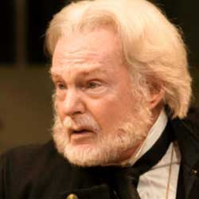

| Home | The Doctors | The Companions | The Villians | Show History |
|
|
Derrek JacobiSir Derek George Jacobi CBE (/ˈdʒækəbi/; born 22 October 1938) is an English actor and stage director. A "forceful, commanding stage presence",[1] Jacobi has enjoyed a highly successful stage career, appearing in such stage productions as Hamlet,[2] Uncle Vanya,[3] and Oedipus the King.[4] He has twice been awarded aLaurence Olivier Award, first for his performance of the eponymous hero in Cyrano de Bergerac in 1983 and the second for his Malvolio in Twelfth Night in 2009. He also received a Tony Award for his performance in Much Ado About Nothing in 1984 and a Primetime Emmy Award in 1988 for The Tenth Man. His stage work includes playing Octavius Caesar,[4] Edward II,[4] Richard III,[4] and Thomas Becket. In addition to being a founder member of the Royal National Theatre[2] and winning several prestigious theatre awards, Jacobi has also enjoyed a successful television career, starring in the critically praised[2]adaptation ofRobert Graves's I, Claudius, for which he won a BAFTA; in the titular role in the acclaimed medieval drama series Cadfael,[5] and as Stanley Baldwin in The Gathering Storm. Though principally a stage actor, Jacobi has appeared in a number of films, such as Henry V (1989), Dead Again (1991), Gladiator (2000), Gosford Park (2001), The Golden Compass (2007), The King's Speech (2010), My Week with Marilyn (2011), and the forthcomingHippie Hippie Shake. He holds a British knighthood and has been appointed a Knight 1st Class of the Order of the Dannebrog.[1] |
Brendan Davey Monica DuCong'e Erik Eyler Kayleen Garcia Katherine Hyche Ryan Moeller |
Christine O'Brien Dilman Alex Recinos Julia Schwartz Madeleine Schwartz Ann Marie Skjold Ashly Wilkins |
[Reference Links] |